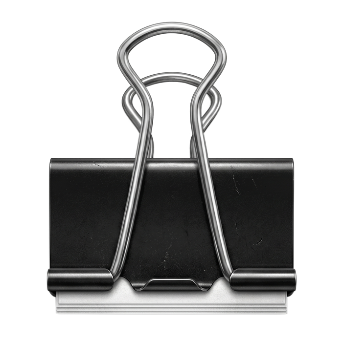
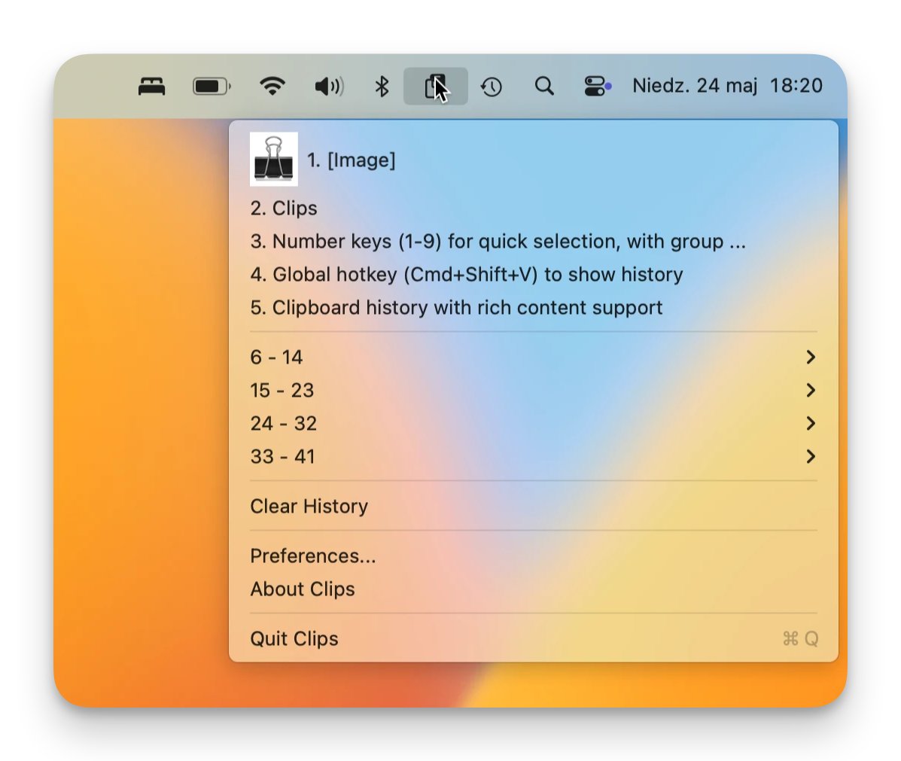

A lightweight clipboard manager that lives in your menu bar—always ready, never in the way.
Download on the Mac App Store View on GitHub
Press ⌘⇧V from anywhere to instantly open your clipboard history—no switching apps needed.
Text, URLs, code snippets, and images are all stored with full fidelity, exactly as you copied them.
Press 1–9 to paste any item immediately, or navigate through groups of older entries with ease.
Search through all your saved clips in Preferences. Copy or delete any entry at any time.
Exclude password managers or any other app from clipboard monitoring with a single click.
Everything stays on your Mac. No accounts, no sync, no data collection—ever.